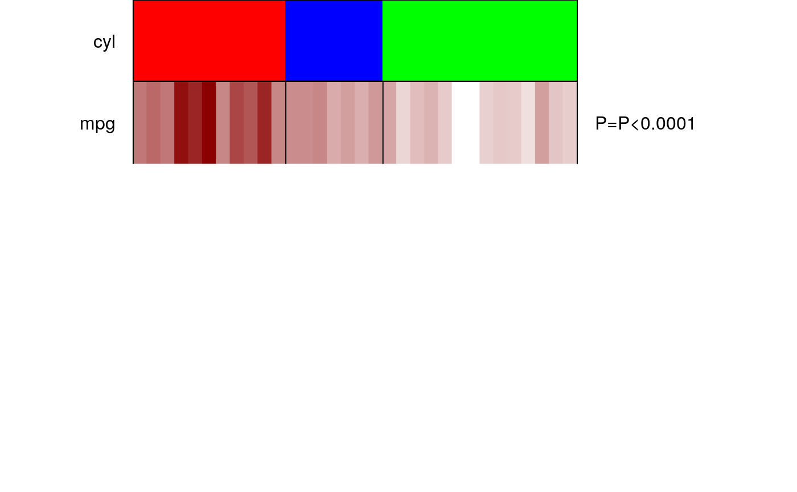

panelet_continuous.RdPlot continuous values belonging to class labels. The values are plotted relative to each other in a gradient from a spectrum between two colors. User has the option to perform an association test and output p-value and a table summarizing median values and range.
panelet_continuous(pp,pp.col,gr, var.n="var.n",NA.flag=TRUE, NA.col="grey", get.pval=FALSE, border=FALSE, border.col="black", ...)
| pp | required. vector. A vector of continuous values of interest |
|---|---|
| pp.col | required. vector. A vector of colors out of which a spectrum of relative values will be plotted to make a gradient of continuous values in |
| gr | required. vector. Class labels as passed to |
| var.n | character. A character specifying the name of the variable. Set to |
| NA.flag | logical, default is |
| NA.col | default is "grey". see |
| get.pval | logical, default is |
| border | logical, default is |
| border.col | default is |
| ... | pass optional arguments here |
... can pass other parameters. Use it for controlling names and colors of panelets via cex, col. border line type and thickness can be controlled via lty and lwd respectively.
A colored panelet of continuous values is plotted as a gradient with values relative to each other. Make sure the variable is ordered according to the group labels in panelet_group.
A colored panelet of categorical values is plotted.
if get.pval=TRUE, returns a table summarizing the median value and range with a p-value from Kruskal Wallis Test
makepanel
#adjust margins and number of panelet values par(mfrow=c(6,1),mar=c(0,8,0,14)) #sort the entire data frame according to the group solution you are interested in mtcars.sort = mtcars[order(mtcars$cyl),] #plot group tt=panelet_group(gr=mtcars.sort$cyl, gr.col=c("red","blue","green"), gr.name="cyl",cex=1, border=TRUE, legend=FALSE) #plot variable mpg tt =panelet_continuous(mtcars.sort$mpg, pp.col=c("white","darkred"), gr=mtcars.sort$cyl,var.n="mpg",NA.flag=FALSE, get.pval=TRUE, border=TRUE)#>## Performing Kruskal-Wallis test